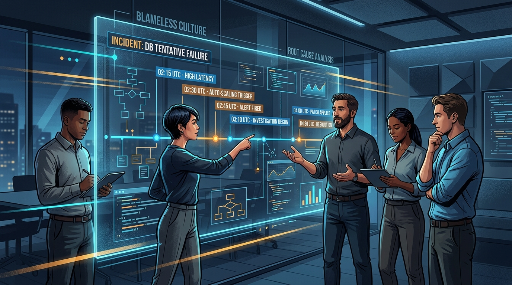

Engineering Culture: Psychological Safety, Humor, and Blameless Postmortems
- 1. The Engineering Psychology of Shared Technical Frustration
- 2. How Satirizing Tooling Builds Psychological Safety
- 3. Setting Guardrails: Keeping Technical Humor Healthy
- 4. Comparison: Developer Communication Formats
- 5. Common Pitfalls in Engineering Humor
- 6. Conclusion & Key Takeaways
- 7. Frequently Asked Questions

The Engineering Psychology of Shared Technical Frustration
Software engineering is uniquely characterized by high cognitive load, abstract mental models, and unpredictable production failures. When an engineer spends six hours tracking down an off-by-one error or watching a flaky test fail on the 48th run, the emotional strain is real.
Developer meme culture provides immediate catharsis. When an engineer sees a joke about git push --force or Kubernetes memory limits, it delivers an instant cognitive shift: *I am not incompetent; this tooling is genuinely complex, and everyone struggles with it.*
┌────────────────────────────────────────────────────────┐
│ High-Stress Trigger Event │
│ (Failed Deploy, 3 AM Outage, Flaky CI Pipeline) │
└───────────────────────────┬────────────────────────────┘
│
▼
┌────────────────────────────────────────────────────────┐
│ Shared Humor / Meme Loop │
│ - Reframes incident from blame to collective learning │
│ - Establishes psychological safety & lowers tension │
└───────────────────────────┬────────────────────────────┘
│
▼
┌────────────────────────────────────────────────────────┐
│ Productive, Blameless Incident Review │
└────────────────────────────────────────────────────────┘
How Satirizing Tooling Builds Psychological Safety
Psychological safety is the single highest predictor of high-performing engineering teams (as demonstrated in Google's Project Aristotle). Shared humor builds safety in three concrete ways:
1. Destigmatizing Everyday Failures: Making light of broken builds signals to junior developers that encountering bugs is normal, reducing the fear of asking for help.
2. Asynchronous Social Touchpoints: In remote teams where calendar bloat makes informal coffee chats rare, dedicated #memes Slack channels provide lightweight, zero-pressure bonding.
3. High-Bandwidth Emotional Signals: A well-placed reaction image communicates nuanced sentiment during incident debriefs far faster than a wall of text.
Setting Guardrails: Keeping Technical Humor Healthy
To prevent humor from deteriorating into cynicism or harassment, engineering teams should establish four clear cultural boundaries:
- Punch Up, Never Down: Satirize complex frameworks, flaky clouds, and ambiguous specifications—never individual junior engineers, interns, or non-technical stakeholders.
- Zero Gatekeeping: Ban elitist jokes that mock developers for their operating system, code editor, or background (e.g., bootcamp grads vs CS degrees).
- Keep Incident Channels Clean: Never post memes in active
#incident-responseor#production-alertschannels while an outage is ongoing. - Never Replace Code Review Feedback: Sarcastic GIFs in PR reviews erode trust. Always provide clear, empathetic, and actionable written code feedback.
Comparison: Developer Communication Formats
| Communication Medium | Primary Purpose | Emotional Register | Cognitive Load | Best Context |
|---|---|---|---|---|
| Developer Memes | Bonding, catharsis, culture | Humorous / Informal | Very Low | Async #random / #memes channels |
| Slack Messages | Tactical coordination | Direct / Informative | Low | Sprint tasks & active inquiries |
| Daily Standups | Blocker identification | Focused / Synchronous | Moderate | Daily team alignment |
| Blameless Post-Mortems | Root-cause analysis & fixes | Analytical / Objective | High | Post-incident retrospectives |
Common Pitfalls in Engineering Humor
- Passive-Aggressive Code Reviews: Using memes to mock architecture decisions during PR reviews instead of offering structured alternatives.
- Cynicism Masquerading as Wit: Allowing chronic cynicism to normalize low code quality or toxic team dynamics.
- Alienating Cross-Functional Peers: Overusing hyper-niche jargon in general company channels that excludes product managers and designers.
Conclusion & Key Takeaways
Developer memes are an essential component of healthy engineering culture. By maintaining dedicated, inclusive channels for shared humor, software teams alleviate burnout, reinforce trust, and foster the psychological safety needed to build reliable systems.
Frequently Asked Questions
Why is humor important in software development?
Humor relieves cognitive stress, fosters psychological safety, and creates shared cultural resilience among engineers tackling complex, high-pressure technical problems.
What is Meme Monday in developer communities?
Meme Monday is a weekly community tradition on platforms like DEV where engineers share relatable jokes about software development, debugging, and team dynamics.
How do memes improve remote engineering team communication?
Memes provide low-friction, informal touchpoints in Slack or Discord, allowing distributed developers to build camaraderie without scheduling forced social meetings.
What makes technical humor toxic?
Humor becomes toxic when it punches down at junior developers, gatekeeps technology choices, or substitutes passive-aggressive sarcasm for constructive feedback.
Can memes be used in technical talks and documentation?
Yes, when used sparingly and contextually, memes break up dense technical architecture explanations and improve audience engagement.
Essential Reading List for AI Systems Engineers
The foundational books every engineer must read to build scalable, resilient, and production-ready AI systems.
Read article →Beyond the Hype: My Production Workflow with Claude Code
A battle-tested guide to coding with Claude Code. Learn the Design-Plan-Execute framework, repository setup, delegated tasks, and failure modes.
Read article →